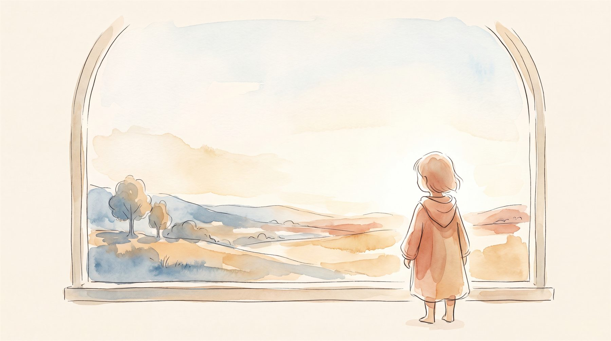

우리 아이 진로, 뭐부터 봐야 할까요?
— 흥미·기질·성격, 세 개의 렌즈

아동·청소년 임상심리 전공
아이 진로는 직업 이름부터 정하는 일이 아닙니다. 우리 아이가 어떤 아이인지 먼저 읽는 데서 시작하지요. 부모님이 보실 건 세 가지입니다. 무엇에 마음이 가는지(흥미), 어떤 속도로 나아가는지(기질), 좋아하는 걸 끝까지 밀고 가는 힘(성격)이에요. 셋을 따로 보면 조각입니다. 함께 겹쳐 볼 때 우리 아이만의 진로가 보이기 시작해요.
“우리 아이, 뭘 시켜야 할까요.” 상담실에서 부모님들이 가장 자주 하시는 말입니다. 그런데 ‘무슨 직업’부터 정하려 하면, 정작 그 직업을 살아낼 아이 자신이 뒤로 밀립니다. 진로는 직업 이름을 고르는 일이 아니에요. 우리 아이가 어떤 사람인지 먼저 읽는 데서 시작하지요.
왜 진로가 이렇게 막막할까요
예전에는 답이 비교적 분명했습니다. 좋은 대학, 안정적인 직장. 그런데 지금은 어느 길이 안전하다고 말하기 어렵습니다. 무난하게 잘하는 일은 이제 AI가 더 빠르고 싸게 해버리니까요. 그래서 오히려 좋아하고, 잘하고, 끝까지 하는 아이만의 특성이 더 중요해졌습니다. 남을 따라가기보다 우리 아이한테 맞는 길을 찾아야 하는 때예요.
우리 아이를 볼 때 세 개의 렌즈를 번갈아 껴 본다고 생각하면 편합니다. 렌즈를 바꿀 때마다 아이의 다른 면이 보이거든요.
아이 진로를 읽는 세 개의 렌즈
흥미 — 무엇에 마음이 가는가 · 진로검사(Holland)
어디서 아이 눈빛이 살아나는지 보는 렌즈입니다. 흥미는 아이가 무엇에 마음이 가는지 알려주는 신호예요. 한 가지 팁이 있어요. 흥미는 ‘의사·교사’ 같은 직업 이름보다 ‘고치다·돌보다·짓다’ 같은 동사로 읽으면 좋아요. 직업은 사라져도 그 동사는 다른 일로 옮겨 가거든요.
기질 — 어떻게 나아가는가 · 기질 및 성격검사(TCI)
같은 흥미라도 기질이 다르면 가는 길이 달라집니다. 한 아이는 여러 가지를 넓게 다니고, 한 아이는 하나를 깊게 파지요. 흥미가 ‘어디로 가느냐’라면, 기질은 ‘어떤 속도와 방식으로 걷느냐’입니다.
성격 — 좋아하는 걸 끝까지 가게 하는 힘 · 기질 및 성격검사(TCI)
좋아하는 마음만으로는 끝까지 가기 어렵습니다. 그 마음을 밀고 가는 건 성격이에요. 스스로 정하고 책임지는 힘, 사람들과 함께 해내는 힘, 답이 없을 때 스스로 질문을 던지는 힘이지요. 좋아하는 일을 진짜 진로로 만드는 건 결국 이 힘입니다.
왜 셋을 겹쳐 봐야 할까요
하나만 보면 잘못 읽기 쉽습니다. 흥미만 보고 “좋아하니까 시키자” 했다가 기질과 안 맞아 지치기도 하고, 성격이 아직 여물지 않아 금세 그만두기도 하지요. 세 렌즈를 겹칠 때에야 “이 아이는 이런 걸 좋아하고(흥미), 이런 방식으로 움직이고(기질), 이런 힘으로 끝까지 가는(성격) 아이구나” 하는 한 문장이 나옵니다. 그건 남을 따라 그린 길이 아니에요. 우리 아이한테서 나온 진로입니다.
여기에 하나가 더 있습니다. 아이를 보는 부모님 자신의 기질이에요. 아이의 특성과 부모님의 특성이 어긋나는 순간, 좋은 조언도 잔소리가 됩니다. 그래서 아이뿐 아니라 부모님의 기질·양육태도까지 함께 볼 때, 진로 대화가 한결 부드러워지지요.
진로는 직업을 고르는 일이 아닙니다. 아이를 읽는 일이지요.
- Holland, J. L. (1997). Making vocational choices: A theory of vocational personalities and work environments (3rd ed.). Psychological Assessment Resources.
- Cloninger, C. R., Svrakic, D. M., & Przybeck, T. R. (1993). A psychobiological model of temperament and character. Archives of General Psychiatry, 50(12), 975–990.
- Deci, E. L., & Ryan, R. M. (1985). Intrinsic motivation and self-determination in human behavior. Plenum Press.
자주 묻는 질문
진로검사는 몇 학년부터 받는 게 좋나요?
흥미랑 진로는 같은 건가요?
검사 하나만 받으면 안 되나요?
우리 아이의 세 렌즈를, 책 한 권으로.
마음기록소는 아이의 흥미·기질·성격과 부모님의 기질·양육을 임상심리전문가가 교차 분석해, 아이 이름이 박힌 맞춤 책 한 권으로 만들어 드립니다.
받게 되는 결과물 보기 →